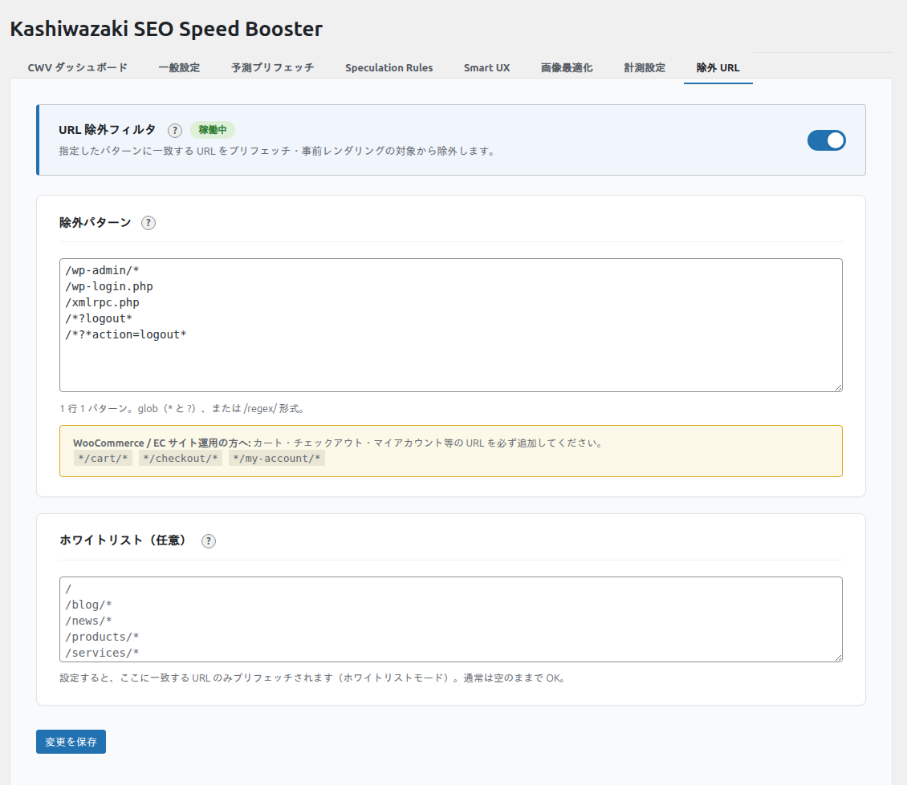

除外 URL パターン
glob パターンと正規表現を組み合わせて、特定のページを最適化の対象から除外したり、対象を限定したりできます。
除外パターンの概要
除外URLパターンでは、予測プリフェッチや Speculation Rules の対象から特定のページを除外できます。1行に1パターンずつ記述し、glob パターンと正規表現の両方に対応しています。テキストエリアにはよく使うパターンのプレースホルダーが表示されるため、初めてでも迷わず設定できます。
よく使う除外パターン例
/wp-admin/*
/wp-login.php
*/cart/*
*/checkout/*
*/my-account/*
/wp-json/*
*.xml
*.pdf
/feed/*ヒント
WooCommerce を使用している場合は、*/cart/*、*/checkout/*、*/my-account/* を除外することをお勧めします。*/ プレフィックスにより多言語プラグイン（/en/cart/ 等）にも対応します。
設定画面

パターンの種類
Glob パターン
*は任意の文字列（0文字以上）にマッチ?は任意の1文字にマッチ- それ以外の文字はリテラルとして扱われます
- パスの完全一致が必要です（部分一致ではありません）
| パターン | マッチする URL | マッチしない URL |
|---|---|---|
/wp-admin/* |
/wp-admin/plugins.php、/wp-admin/edit.php |
/wp-admin（末尾スラッシュなし） |
*/cart/* |
/cart/、/shop/cart/ |
/my-cart/ |
/page/*/edit |
/page/123/edit |
/page/edit |
*.pdf |
/docs/manual.pdf |
/docs/manual.html |
/about |
/about |
/about/team |
正規表現パターン
/pattern/flags形式で記述- 先頭と末尾が
/で囲まれ、末尾の/の後にフラグ（i,m,s,u）を指定可能 - フラグなしの場合は、パターン本体に正規表現メタ文字（
\,^,$,[,(,),|,+,{）が含まれている必要があります - PHP（PCRE）と JavaScript（RegExp）の共通サブセットで評価されます。対応フラグは
i（大文字小文字無視）、m（複数行）、s（dotall）、u（Unicode）の 4 つです
| パターン | 説明 | マッチする URL |
|---|---|---|
/^\/author\/.+/ |
著者ページ | /author/john/、/author/jane/ |
/^\/tag\/.+/i |
タグページ（大文字小文字区別なし） | /tag/wordpress/、/Tag/SEO/ |
/\.(pdf|docx?)$/ |
ドキュメントファイル | /files/doc.pdf、/files/report.docx |
/^\/members\/\d+/ |
メンバーIDページ | /members/123/、/members/456/profile |
注意
パス形式のパターン（例: /wp-admin/）はフラグなし・メタ文字なしの場合、glob パターンとして扱われます。正規表現として扱いたい場合は、メタ文字を含めるか（例: /^\/wp-admin\/.*/）、フラグを付けてください（例: /\/wp-admin\//i）。
glob vs 正規表現の判定ルール
プラグインは以下のロジックでパターンの種類を自動判定します。
- パターンが
/で始まり、2番目以降の/で終わる場合に正規表現候補 - 末尾の
/の後にフラグ文字（i,m,s,u）がある場合 → 正規表現 - フラグがない場合、パターン本体に正規表現メタ文字が1つ以上あれば → 正規表現
- それ以外 → glob パターン
| パターン | 判定 | 理由 |
|---|---|---|
/wp-admin/ |
glob | フラグなし、メタ文字なし |
/wp-admin/* |
glob | / で始まるが * で終わるため正規表現形式でない |
/^\/author\/.+/ |
正規表現 | フラグなし、メタ文字あり（^, \, ., +） |
/^\/author\/.+/i |
正規表現 | フラグ i あり |
/page/ |
glob | フラグなし、メタ文字なし |
除外パターンと許可パターン
除外パターン（Exclude Patterns）
- 指定したパターンにマッチするURLを最適化対象から除外
- 予測プリフェッチ: glob・正規表現パターンともに JavaScript（booster.js）で評価されます
- Speculation Rules: glob パターンのみが
not.href_matchesに反映されます。正規表現パターンが 1 つでも含まれると、安全のため Speculation Rules の出力自体が停止します（JavaScript 側のプリフェッチは引き続き正規表現を評価します） - Smart UX スピナー・画像最適化・計測には影響しません
wpsb_exclude_patterns/wpsb_include_patternsフィルタでパターン配列をカスタマイズ可能
許可パターン（Include Patterns / ホワイトリスト）
- 設定すると、マッチするURLのみを予測プリフェッチの対象にします（ホワイトリストモード）
- 空の場合はすべてのURLが対象（デフォルト）。プレースホルダーに
/、/blog/*、/products/*等の例が表示されます - 除外パターンと併用可能（許可パターンにマッチしても除外パターンにマッチすれば除外）
- Speculation Rules: glob パターンは
href_matchesの対象範囲として反映されます。正規表現のみの場合は Speculation Rules の出力が停止します - Smart UX スピナー・画像最適化・計測には影響しません
- 「URL 除外フィルタ」トグルを OFF にすると、除外パターンとともにホワイトリストも無効になります
Speculation Rules との連携
除外パターンのうち glob パターンは、Speculation Rules の not.href_matches に自動変換されます。ただし、正規表現パターンが 1 つでも含まれている場合は、安全のため Speculation Rules の出力自体が停止します（正規表現は API 非対応のため、一部の除外だけが効かない状態を防ぎます）。JavaScript 側の予測プリフェッチでは正規表現も含めて全パターンが評価されます。
許可パターン（ホワイトリスト）のうち glob パターンは、Speculation Rules の href_matches（対象範囲）にも反映されます。許可パターンが正規表現のみの場合は、Speculation Rules の出力が停止します。
ヒント
Speculation Rules で確実にページを除外するには、glob パターンのみを使用してください。正規表現パターンが含まれると Speculation Rules は全体が停止し、JavaScript のプリフェッチのみが動作します。
組み込み除外について
WordPress 管理画面（/wp-admin/*）やログイン、カート・チェックアウト等の URL は、「URL 除外フィルタ」の ON/OFF に関係なく、Speculation Rules では常に除外されます。これはプリレンダリングによる副作用事故を防ぐ安全機構です。